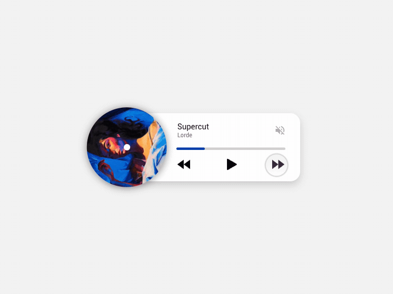

Bem vindes ao MusiCoffe, que música você vai tomar hoje?

Top Músicas mais tomadas no mês
Para começar nosso Top Musicas desse mês, trago o novo album da Jessie Ware que conheci justamente
por causa da sua música presente no novo album, Whats Your Plesure?
É uma mistura de vibes meio pop dos anos 80 com pop moderno, além do clipe do single que ficou simplesmente incrível!!
King Princess na sua nova musica impressionou com o clipe onde ela é representada em 3D (sinceramente, eu achei que fosse sair da disciplina de Modelagem 3D fazendo algo parecido mas não saí do cubo, enfim...)
Chip Chrome and the Mono-Tones é o novo album solo e ao mesmo tempo não, de Jesse Rutherford, da banda The Neighbourhood. Conhecidos por suas melodias muito únicas e características, a banda nunca decepciona os fãs ao lançar um novo album. Com este novo, não foi diferente!
Você pode conferir o som logo abaixo:
Top Artistas
Aos 17 anos, Ada foi apresentada à corte e passou a ser convidada para festas na cidade. Seu jeito inteligente e rápida atraiu muitos solteiros, mas ela se interessou por um velho matemático chamado Charles Babage, que lhe contou sobre a invenção que trabalhava há anos, a “máquina diferencial”, que fazia grandes cálculos.
Charles gostou da jovem, ela era uma das poucas pessoas que se interessou e entendeu suas invenções. Quando Ada conheceu a máquina diferencial, viu nela muitas possibilidades que nem mesmo Charles havia pensado. O entusiasmo da jovem matemática o impressionava.
Sobre o site
Charles era viúvo e lutava por investimentos para os seus projetos. Ada se casou e teve 3 filhos. Em 1830, isso significava que ela deveria abandonar os estudos e se dedicar aos filhos. Trocava cartas com Charles, acompanhava o trabalho dele de longe. Tinha pouco tempo para os próprios estudos. Passou a resolver problemas matemáticos à noite, após as crianças dormirem. Ela queria era trabalhar com Charles em suas máquinas incríveis.
Tempos depois, Charles criou o Engenho Analítico, melhor do que a máquina diferencial, pois seria capaz de analisar dados e guardar informações na memória. Algo tão revolucionário que poucas pessoas entenderam. Para divulgar sua nova máquina, precisaria publicar artigos em francês, língua que ele não sabia, mas Ada era fluente. Como ela entendia as criações de Charles, era a pessoa perfeita para traduzir esses artigos.
Enquanto Ada traduzia o conteúdo, fazia anotações por conta própria, imaginava inúmeras possibilidades que a máquina teria. Não tardou para que suas anotações ficassem maiores do que o próprio artigo.
Charles queria que a máquina resolvesse problemas matemáticos. Ada pensava em algo muito maior: os números poderiam representar coisas totalmente diferentes como letras e notas musicais. Escreveu instruções detalhadas com diagramas e tabelas explicando como o engenho analítico deveria processar uma equação matemática complicada. Assim, a máquina resolveria em segundos o que um humano levaria horas para solucionar. Os computadores ainda não existiam, mas Ada tinha acabado de criar o primeiro programa de computador. Ada não viveu para ver que suas ideias se transformariam nos computadores modernos que usamos hoje.